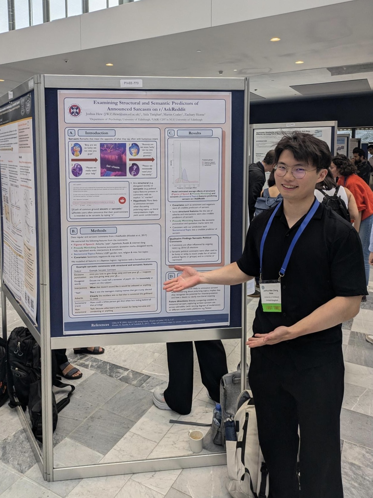
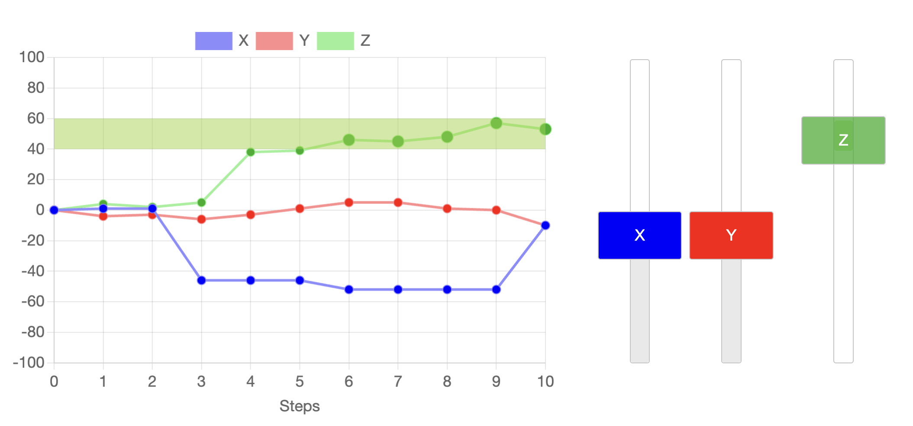
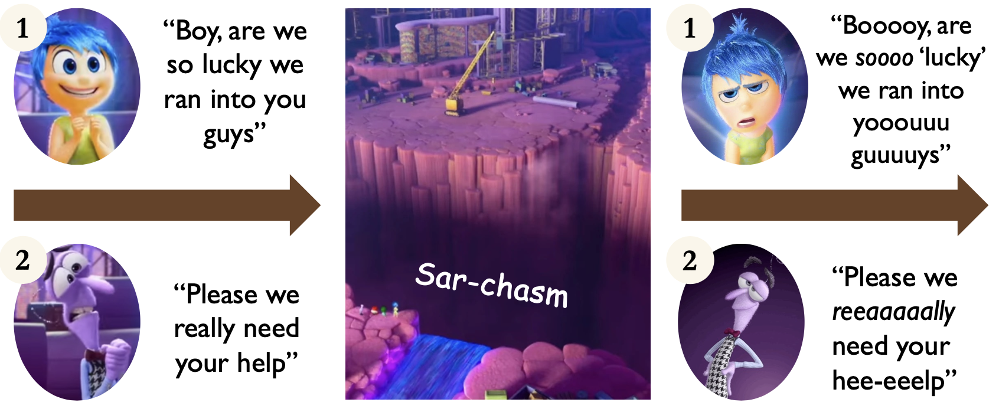

Me at my first conference presenting my first poster!
Ongoing projects

I looked at how people infer causal structure in environments where they have little control i.e. their actions seldom lead to desired outcomes, and/or little reward for successful action. We found that low control led to subjective feelings of uncontrollability, and passive behavioural strategies, even when the environment was objectively controllable (learned helplessness). I'm currently conducting additional analyses to look at how effective participant's individual actions were.
Hew, J. W. Z., Bramley, N. R. (2026). Causal inference and learned helplessness. Proceedings of the 48th Annual Meeting of the Cognitive Science Society. pdf demo github

Sarcasm on social media We investigated the prevalence of both prosidic-mimicking [e.g. :) :/ :O or amaaaaaazing] and semantic markers in sarcastic comments on Reddit. We found that a host of cues which mimic prosody, and other aspects of figures of speech, were inconsistent predictors of announced sarcasm. In contrast, when talking about sociomoral topics such as politics or race, users were more likely to tag their comments with "/s". This suggests that users are more likely to announce sarcasm in text-based conversations where misinterpretation would be socially detrimental. This project began its life as my undergraduate coursework for Zachary Horne's course Big Data and Psychological Science.
Hew, J., Tarighat, A., Corley, M., & Horne, Z. (2024). Examining structural and semantic predictors of announced sarcasm on r/AskReddit. Proceedings of the 46th Annual Meeting of the Cognitive Science Society. pdf poster osf
Direct speech: Karen was working late at night and struggled to stay awake. William told Karen: "Falling asleep at a laptop is always fun." Karen decided to head to bed.
Indirect speech: Karen was working late at night and struggled to stay awake. William told Karen that falling asleep at a laptop was always fun. Karen decided to head to bed.
Sarcasm and direct speech In a follow-up experiment, we investigated whether people were more likely to interpret direct speech facilitated sarcastic interpretations compared to indirect speech. This draws from concepts like embodied cognition, mental simulation, and speech-like markers in speech. We found that sarcastic direct speech was rated as more sarcastic than indirect speech, but found no differences in reading times on self-paced reading task. demo
97% of climate scientists agree that humans are causing global warming.
But only 64% of adults believe global warming is caused by human activites.
This project investigates the factors that influence our consensus judgements given different evidence, whether that be amount of agreement, source of testimony, or topic of discussion. A key aim of this project is to improve our understanding of how to communicate scientific findings on pressing issues such as climate change. As such, I will run an experimental study and create a series of research-backed short video essays/animations to increase awareness on these topics. This project is funded by a Carnegie Vacation Scholarship (£3800) and the Our Minds Programme (£1600).
In the distant future, we plan to carry out follow-up experiments with different manipulations and look at naturalistic data from r/Showerthoughts or r/The10thDentist containing posts with wide agreement/disagreement.
Past projects
I work in a team led by Jingjie Li exploring unsafe issues such as violence and abuse in games such as Persona 5. I work mostly on the theory-building aspect of the pipeline, developing a taxonomy to categorise these issues for annotations. Our end goal is to explore how existing LLM’s fair when identifying unsafe content in video game dialogue. We use data from the Video Game Dialogue Corpus and are funded by Edinburgh's Generative AI Laboratory (GAIL).
In my 2nd year I was a volunteer research assistant at the Health and Relationship Processes (HARP) lab where I worked on collecting data for a dyadic study investigating wellbeing within romantic relationships. I was also a research assistant for Greta Gandolfi where I annotated the linguistic features within conversations between humans and Ferhat (social robot).